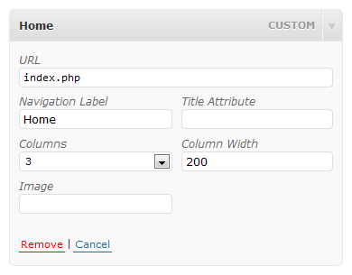
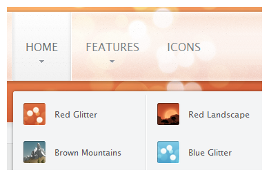

Set up the Wordpress menu
This tutorial shows you how to set up the main menu correctly in your Warp based YOOtheme template.
After installation of the template click on Appearance » Menus in the administration menu on the left.
If you already have created a menu you can skip this step.
Create the menu

Click on the small plus sign to create a new menu, give it a name and click on Save.
You can now assign articles or pages to the menu, like explained in the the official Wordpress Menu Tutorial.
You can also create non-clickable menu items, which are for example used in the Accordion menu. To create such an item, create a custom link menu item with a single # as URL.
Assign the menu as Main Navigation
Before the menu works properly in your YOOtheme template, you have to assign it to the main navigation of the template.
To do so, just select your main menu in the box Theme Locations on the left and click on Save.
Menu Styles
Basically there are two menu styles - Mega and Accordion. The menu will choose its style automatically depending on what position it is published on. The templates menu position will give you the horizontal Mega style, while the sidebar positions will render the menu with the Accordion style.
Dropdown menu columns

In your Wordpress administration click on Appearance » Menus and click on the tab of the main menu.
Choose the menuitem with the dropdown menu you want to customize and click on the small arrow on the right to expand the settings.
There you can set the total of columns you want to have in this menu items dropdown and the width of each column in pixel.
Using icons in menu items

If you'd like to display icons for dropdown menu items, just navigate to the desired level 2 menu item of your Main Menu (Appearance » Menus » Your Menu).

Click on the little arrow to expand the menu item settings and type in the path to the icon in the field Image. The path is the relative path to the folder wp-content/uploads/.
Add subtitles to menu items

A subtitle can be added to a menu item by simply placing your subtitle text behind two "|" (pipe) characters. Navigate to Appearance » Menus and select your menu in the tabs on the top. Then, create a new menu item or edit an old one. Place two "|" (pipe) characters behind the titles caption and enter a text for the subtitle.